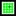
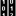

Dynamic Components
The dynamic components feature provides the means of observing and interacting with components that are hidden inside a subcircuit directly from a higher hierarchical level of the design.
Concept and Solution
Imagine you have placed a LED inside a circuit named MyNiceCircuit. Now you use MyNiceCircuit as a subcircuit in a top-level circuit named MyToplevel. During normal simulation in MyToplevel, your LED is hidden inside the subcircuit block; hence you have no way to see if the LED in MyNiceCircuit is lighting up or not without opening the subcircuit.
The dynamic components feature solves this problem: it provides the possibility of putting a visual representation of the indicator (or control component) directly on the subcircuit symbol of MyNiceCircuit.
Note: The dynamic components feature is recursive. This means that if you have a hierarchical structure, it will show all possible dynamic components available down from the current subcircuit.
How to Add
- Open the circuit containing the component (e.g. MyNiceCircuit).
- Open the appearance editor of that circuit.
- Click on the
 tool icon.
tool icon. - A window will open listing all the available components inside the circuit, and you can select which ones to show on the subcircuit symbol and place them.
Supported Components
Currently, the following components support dynamic component visualization:
| LED | |
| RGB-LED | |
| 7-Segment Display | |
| Hex Digit Display | |
|
 |
Dot Matrix |
| TTY | |
| Probe | |
| Register | |
|
 |
Counter |
| Nios2 Simulator | |
| VGA Screen | |
| RISC-V IM Simulator |
Next: User's Guide.